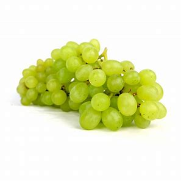

| Die Weintraube . . . | |
|---|---|
Die Kletterpflanze Weinrebe gehört zu den ältesten Kulturpflanzen der Menschheit. Heute sind rund 16.000 Rebsorten bekannt. Es gibt Weinreben mit grünen bzw. gelben (weißen) Beeren und solche mit roten bis dunkelblauen (roten) Beeren. Diese sind von kugeliger bis ovoider Gestalt und haben einen Durchmesser von 6 bis 20 Millimetern. |
 |
| Zurück zum Obstkorb | |
| | |
| Ananas | Orange |